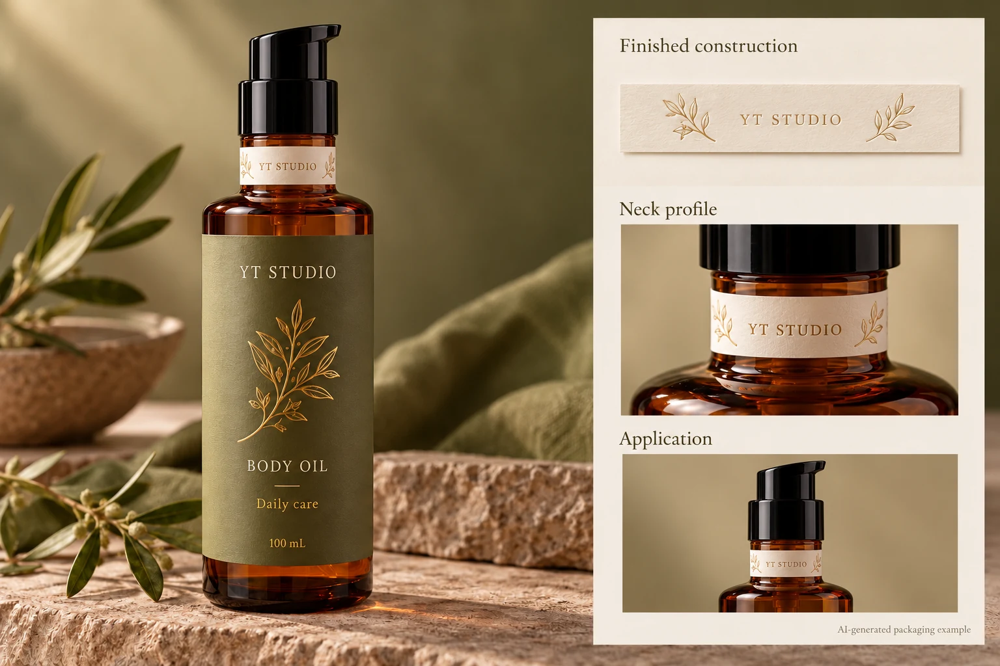
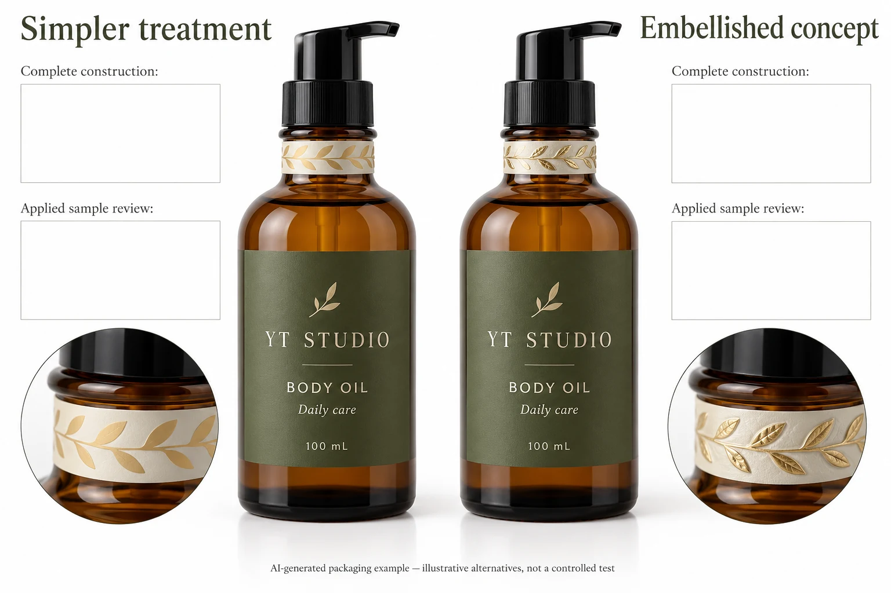

A decorative neck band can look convincing on a rendering while its final construction has not been evaluated around the bottle's tight curve. If an edge lifts on a trial sample, asking only for stronger adhesive leaves the label's shape, stiffness and finish outside the conversation.
Identify the complete decorated construction and the actual neck geometry. Then ask the converter to evaluate the proposed embellishment and application together. A less rigid design, a different shape or another supported construction may be worth comparing before treating adhesive strength as the only available adjustment.

Define whether the neck label is decoration or a closure device
Mark where the band sits relative to the bottle, collar, cap and pump. Does it remain on the stationary bottle neck, or bridge a part that moves when opened? A decorative strip around the neck has a different task from a seal intended to show an opening event.
If opening behaviour is part of the brief, use the closure-seal specification guide and identify that function explicitly. Do not call a decorative band tamper evident because it happens to sit near the cap. This article concerns whether a decorated neck label can conform and remain acceptable under its agreed application and handling conditions.
Obtain the actual bottle and closure reference. A neck can change diameter, slope or surface profile over a short distance. Mark the usable region rather than copying the body's label size onto a smaller radius. If the label spans a transition, show that feature on the drawing and sample request.
Ask what the decoration adds to the construction
List the face material, adhesive, print and protective finish. Identify embossing, high-build varnish or another embellishment and the regions where it is applied. A flat unfinished swatch may not represent the bending behaviour of the final decorated band.
Avery Dennison's neck-label guidance describes how inks, varnishes and heavy embellishments can change stiffness or introduce stresses relevant to detachment. It recommends suitable trials and technical support for the proposed combination. The source context is its neck-label materials; it does not establish a defect or provide a universal recipe for your cosmetic bottle.
The purchasing lesson is specific: ask whether the sample contains the production decoration. If it does not, record which evidence it can provide. A paper fit model can establish placement intent while leaving finish-related bending and adhesion questions open.
Compare a controlled alternative
If the embellished sample raises a concern, ask the converter which comparison would help distinguish the variables. It may propose an identified version with a simpler treatment, a changed shape or another supported construction. Retain the same actual bottle and review conditions where the comparison permits.
Record every change. If adhesive, face stock and decoration all change together, a favourable result belongs to the new combination; it cannot honestly be credited to one isolated ingredient. Do not invent an explanation from a photograph of a raised corner.
Also involve the application owner. A hand-applied band and an automatically applied construction may involve different placement and pressure histories. The operator should control the actual setup under its own procedure. This guide does not prescribe wipe-down pressure, speed, tension or a manual technique as a universal correction.
Use a neck-label sample record
| Item | What to identify | What it decides |
|---|---|---|
| Function | Decorative band or separately specified opening function | Which acceptance questions belong to the project |
| Container | Neck dimensions/profile, surface and closure position | Whether the proposed sample represents the actual bend |
| Construction | Face, adhesive, print, finish and embellishment locations | Whether the final stiffness and interfaces are represented |
| Geometry | Shape, overlap or gap, and marked intended placement | Whether fit and contact areas are understood |
| Application | Hand/line route, responsible operator and preparation reference | Whether the operation being assessed is repeatable |
| Observation | Sample revision, stage, location and specific feature | What the team actually saw |
| Decision | Accepted combination, unresolved conditions and owner | What may proceed to the order |

Start with function, container and construction. Mark the proposed location on a real bottle or an appropriate drawing. Ask the converter and operator for the representative sample and review method. Record observations at the agreed stages, preserving the actual sample if a feature needs investigation.
Stop the affected release if the final embellishment is missing from the only assessed sample, the intended band crosses an unreviewed moving component, or the observed issue has not been connected to the proposed correction. Do not replace those gaps with a blanket statement that the label uses permanent adhesive.
If a seam overlaps onto a finished face, evaluate that contact separately. The overlap-seam guide helps identify the receiving surface. A neck band can have both a bending issue and a face-to-adhesive seam question; recording them separately makes the next action clearer.
Let the visual ambition fit the actual pack
A hypothetical short decorative strip on a broad, nearly straight neck region may be assessed with a relatively simple construction. Another design covers a tighter curve with heavy decoration. The latter has a clearer reason to compare its finished bending and contact behaviour before ordering the full run.
One reasonable choice is to keep a simpler band if it delivers the brand's visual hierarchy. Another is to retain the embellishment after relevant construction and application evidence is obtained. Ask the converter to explain cost and production implications for the actual alternatives. There is no supported universal claim here that one route is cheaper, faster or stronger.
For cosmetic bottle labels, provide the bottle/closure reference, marked neck area, proposed dimensions, quantities and artwork. Identify the embellishment, any overlap and the actual application route. Include what the current sample does and does not represent.
Use the inquiry form to prepare the message. Send drawings and sample photographs separately by email or WhatsApp; the form does not upload attachments. Ask for a finished construction that can answer the neck-specific question before approving the decoration from a flat proof.
Sources: Avery Dennison neck-label technical guide and its neck-label discussion. These discuss geometry, embellishment and application within the supplier's context; no performance result or supported YT capability is inferred.